Contents
Nettoyage du Workspace
clear all;
close all;
clc;
Exercice 1
img = imread('images\theArtist.png');
figure;
imshow(img);
img = Egalisation_Histogramme(img);
figure;
imshow(uint8(img));
gaussien = (1/90) * [1,2,1,2,1;
2,4,8,4,2;
1,8,18,8,1;
2,4,8,4,2;
1,2,1,2,1];
img = Convolution(img, gaussien);
figure;
imshow(uint8(img));
[img, lap] = Rehaussement_Contour(img,0.3);
for i=1:size(img,1)
for j=1:size(img,2)
lap(i,j) = max(lap(i,j), 0);
img(i,j) = max(img(i,j), 0);
end
end
figure;
subplot(1,2,1);
imshow(uint8(lap));
subplot(1,2,2);
imshow(uint8(img));
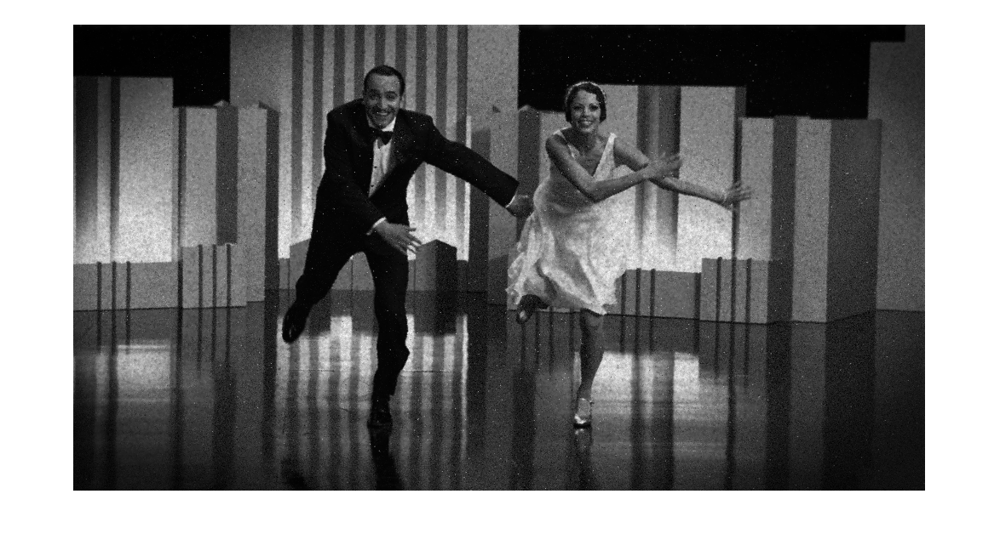 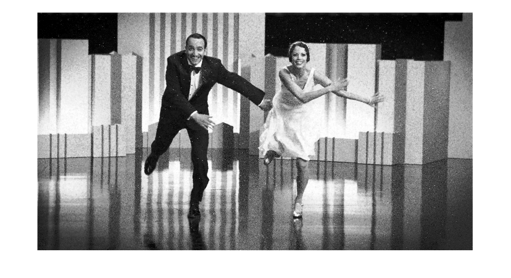

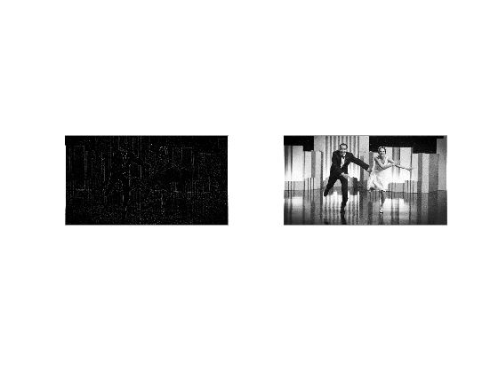
Exercice 2
clear all;
close all;
clc;
img = rgb2gray(imread('images\pieces.jpg'));
imshow(uint8(img));
img = Binariser(img, 250);
figure;
imshow(uint8(img));
img = imclose(img, strel('disk',10));
figure;
imshow(uint8(img));
monnaie = Compter_Monnaie(img);
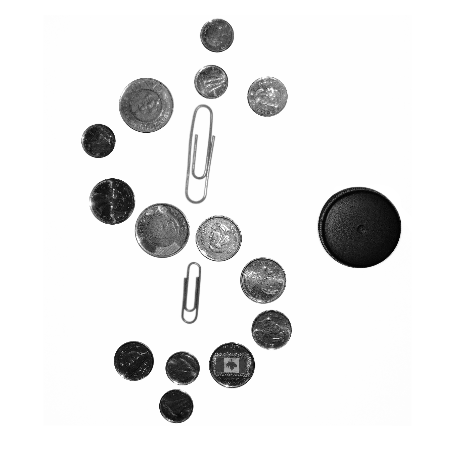 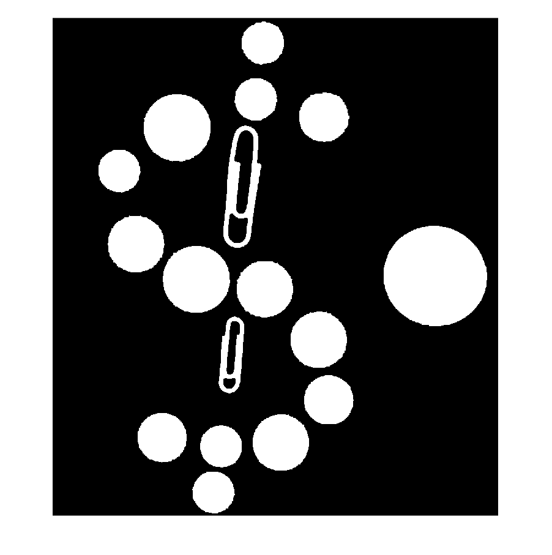
Exercice 3
imgv = imread('images\Barres_Verticales.png');
imgh = imread('images\Barres_Horizontales.png');
imgo = imread('images\Barres_Obliques.png');
fftv = abs(fftshift(fft2(imgv)));
ffth = abs(fftshift(fft2(imgh)));
ffto = abs(fftshift(fft2(imgo)));
imshow(log(1+fftv), []);
figure;
imshow(log(1+ffth), []);
figure;
imshow(log(1+ffto), []);
imgr = imrotate(imgv, 70, 'bilinear', 'crop');
fftr = abs(fftshift(fft2(imgr)));
figure;
imshow(log(1+fftr), []);
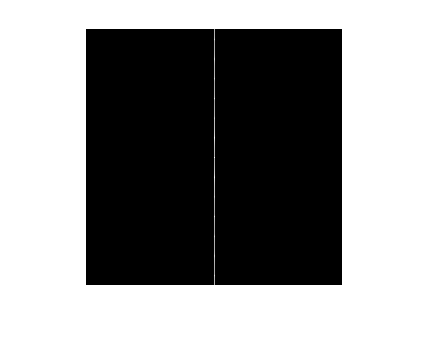 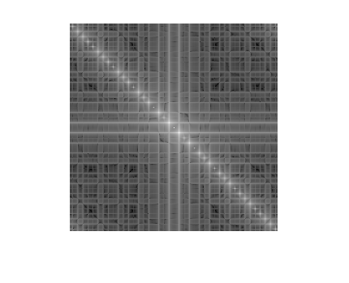 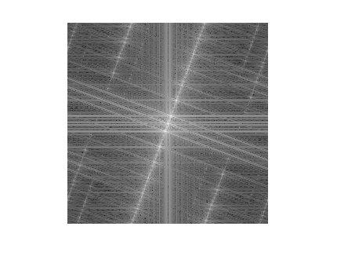
Exercice 4
clear all;
close all;
clc;
img = imread('images\maillot.png');
tfd = (fft2(img));
figure;
imshow(log(1+abs(fftshift(tfd))), []);
figure;
imshow(imread('images\schema.png'));
filtrebas = fspecial('gaussian', [551,777], 2);
imgfb = imfilter(img, filtrebas, 'same');
figure;
imshow(imgfb);
filtrehaut = fspecial('laplacian');
imgfh = imfilter(img, filtrehaut, 'same');
figure;
imshow(imgfh)
filtreideal = double(rgb2gray(imread('images\untitled3.png')))/255;
atfd = abs(tfd);
tfdf = fftshift(tfd).*filtreideal;
img5 = ifft2(ifftshift(tfdf));
figure;
imshow(img5, []);
filtreideal = double(rgb2gray(imread('images\untitled4.png')))/255;
atfd = abs(tfd);
tfdf = fftshift(tfd).*filtreideal;
img5 = ifft2(ifftshift(tfdf));
figure;
imshow(img5, []);
Warning: Displaying real part of complex input.
Warning: Displaying real part of complex input.
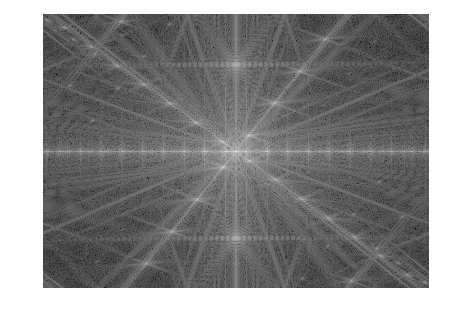 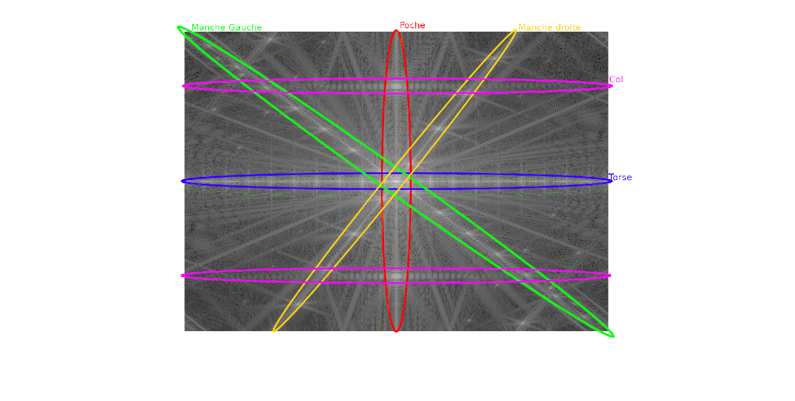 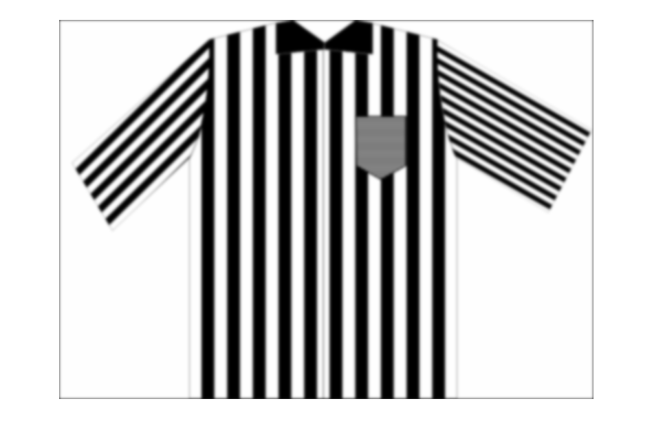 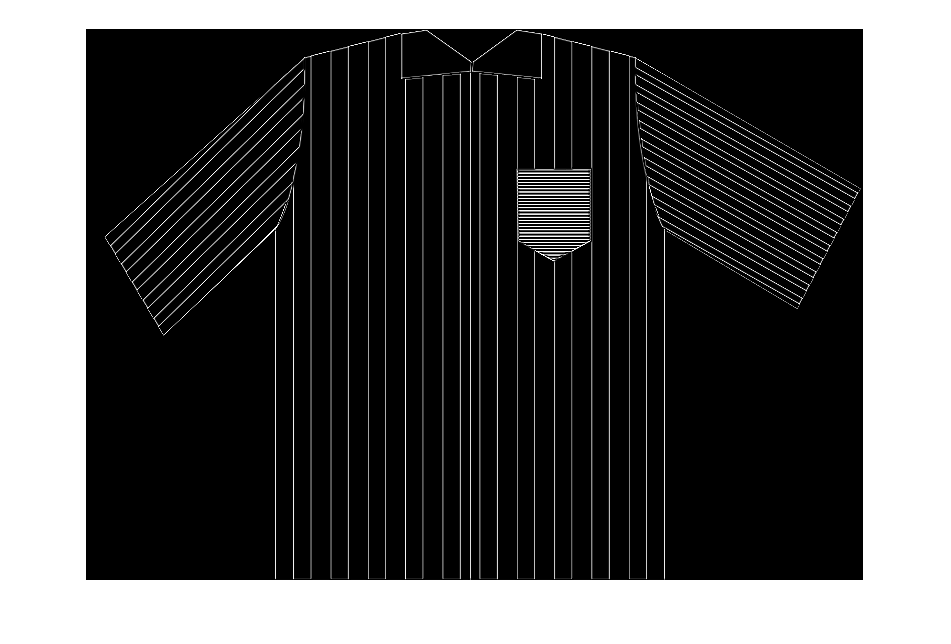 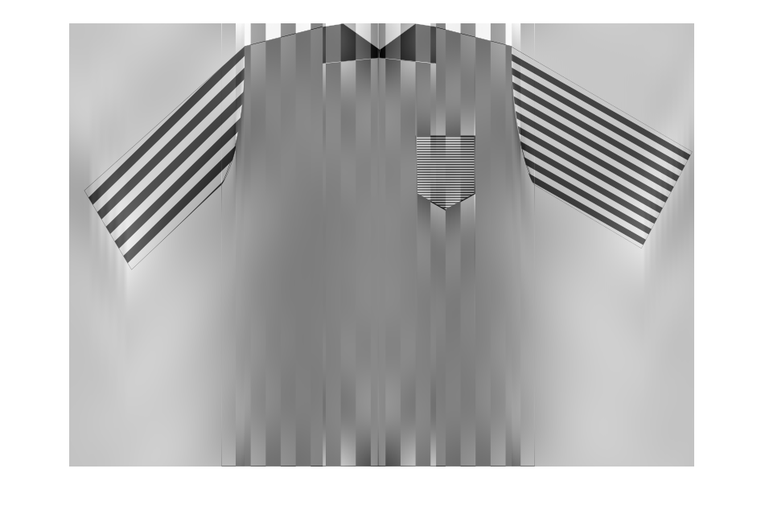
Fonctions
function[result] = Egalisation_Histogramme(img)
[h,count] = imhist(img);
hnorm = h/(size(img,1)*size(img,2));
result = zeros(548,1000);
for i=1:size(img,1)
for j=1:size(img,2)
sum = 0;
for k=1:img(i,j)
sum = sum + hnorm(k);
end
result(i,j) = 255*sum;
end
end
end
function[result] = Convolution(img, masque)
m = uint64(size(masque,1)/2);
n = uint64(size(masque,2)/2);
masque = rot90(masque, 2);
result = zeros(size(img,1),size(img,2));
for i=m:(size(img,1)-m+1)
for j=n:(size(img,2)-n+1)
submatrix = img(i-m+1:i+m-1, j-n+1:j+n-1);
mat = double(submatrix).*masque;
s = sum(mat, 'all');
result(i,j) = s;
end
end
end
function[result, lap] = Rehaussement_Contour(img,k)
gaussien = (1/16) * [1,2,1;
2,4,2;
1,2,1];
laplacien = [-1,-1,-1;
-1,8,-1;
-1,-1,-1];
lap = Convolution(img,laplacien);
result = Convolution(img,gaussien) + k * lap;
end
function[result] = Binariser(img, k)
result = zeros(size(img,1),size(img,2));
for i=1:size(img,1)
for j=1:size(img,2)
if img(i,j) > k
result(i,j) = 0;
else
result(i,j) = 255;
end
end
end
end
function[result] = Compter_Monnaie(img)
img = imerode(img, strel('disk',80));
[L,dix] = bwlabel(img);
img = imerode(img, strel('disk',20));
[L,cinq] = bwlabel(img);
img = imerode(img, strel('disk',15));
[L,vcinq] = bwlabel(img);
img = imerode(img, strel('disk',25));
[L,deux] = bwlabel(img);
img = imerode(img, strel('disk',20));
[L,cookie] = bwlabel(img);
dix = dix - cinq;
cinq = cinq - vcinq;
vcinq = vcinq - deux;
deux = deux - cookie;
result = [cinq, dix, vcinq, deux];
end